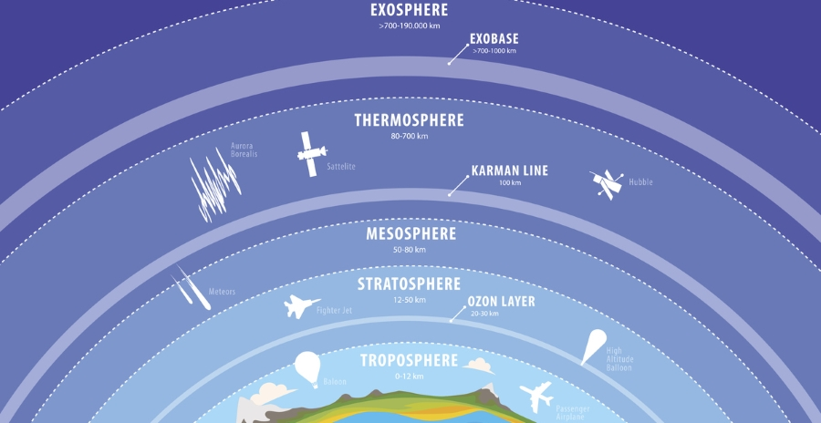

The atmosphere of the Earth serves as a key factor in sustaining the planetary ecosystem. The thin layer of gases that envelops the Earth is held in place by the planet's gravity. Dry air consists of 78% nitrogen, 21% oxygen, 1% argon and other inert gases, such as carbon dioxide. The remaining gases are often referred to as trace gases,[13] among which are the greenhouse gases such as water vapor, carbon dioxide, methane, nitrous oxide, and ozone. Filtered air includes trace amounts of many other chemical compounds. Air also contains a variable amount of water vapor and suspensions of water droplets and ice crystals seen as clouds. Many natural substances may be present in tiny amounts in an unfiltered air sample, including dust, pollen and spores, sea spray, volcanic ash, and meteoroids. Various industrial pollutants also may be present, such as chlorine (elementary or in compounds), fluorine compounds, elemental mercury, and sulphur compounds such as sulphur dioxide [SO2].
The ozone layer of the Earth's atmosphere plays an important role in depleting the amount of ultraviolet (UV) radiation that reaches the surface. As DNA is readily damaged by UV light, this serves to protect life at the surface. The atmosphere also retains heat during the night, thereby reducing the daily temperature extremes.
Layers of the Atmosphere...

Principal layers...
Earth's atmosphere can be divided into five main layers. These layers are mainly determined by whether temperature increases or decreases with altitude. From highest to lowest, these layers are:
Exosphere: The outermost layer of Earth's atmosphere extends from the exobase upward, mainly composed of hydrogen and helium.
Thermosphere: The top of the thermosphere is the bottom of the exosphere, called the exobase. Its height varies with solar activity and ranges from about 350�800 km (220�500 mi; 1,150,000�2,620,000 ft). The International Space Station orbits in this layer, between 320 and 380 km (200 and 240 mi).
Mesosphere: The mesosphere extends from the stratopause to 80�85 km (50�53 mi; 262,000�279,000 ft). It is the layer where most meteors burn up upon entering the atmosphere.
Stratosphere: The stratosphere extends from the tropopause to about 51 km (32 mi; 167,000 ft). The stratopause, which is the boundary between the stratosphere and mesosphere, typically is at 50 to 55 km (31 to 34 mi; 164,000 to 180,000 ft).
Troposphere: The troposphere begins at the surface and extends to between 7 km (23,000 ft) at the poles and 17 km (56,000 ft) at the equator, with some variation due to weather. The troposphere is mostly heated by transfer of energy from the surface, so on average the lowest part of the troposphere is warmest and temperature decreases with altitude. The tropopause is the boundary between the troposphere and stratosphere.
Other layers...
Within the five principal layers determined by temperature are several layers determined by other properties.
The ozone layer is contained within the stratosphere. It is mainly located in the lower portion of the stratosphere from about 15�35 km (9.3�21.7 mi; 49,000�115,000 ft), though the thickness varies seasonally and geographically. About 90% of the ozone in our atmosphere is contained in the stratosphere.
The ionosphere, the part of the atmosphere that is ionized by solar radiation, stretches from 50 to 1,000 km (31 to 621 mi; 160,000 to 3,280,000 ft) and typically overlaps both the exosphere and the thermosphere. It forms the inner edge of the magnetosphere.
The homosphere and heterosphere: The homosphere includes the troposphere, stratosphere, and mesosphere. The upper part of the heterosphere is composed almost completely of hydrogen, the lightest element.
The planetary boundary layer is the part of the troposphere that is nearest the Earth's surface and is directly affected by it, mainly through turbulent diffusion.
Effects of global warming...


The potential dangers of global warming are being increasingly studied by a wide global consortium of scientists. These scientists are increasingly concerned about the potential long-term effects of global warming on our natural environment and on the planet. Of particular concern is how climate change and global warming caused by anthropogenic, or human-made releases of greenhouse gases, most notably carbon dioxide, can act interactively, and have adverse effects upon the planet, its natural environment and humans' existence. It is clear the planet is warming, and warming rapidly.�This warming is also responsible for the extinction of natural habitats, which in turn leads to a reduction in wildlife population.The most recent report from the Intergovernmental Panel on Climate Change (the group of the leading climate scientists in the world) concluded that the earth will warm anywhere from 2.7 to almost 11 degrees Fahrenheit (1.5 to 6 degrees Celsius) between 1990 and 2100.[14] Efforts have been increasingly focused on the mitigation of greenhouse gases that are causing climatic changes, on developing adaptative strategies to global warming, to assist humans, other animal, and plant species, ecosystems, regions and nations in adjusting to the effects of global warming. Some examples of recent collaboration to address climate change and global warming include:
The United Nations Framework Convention Treaty and convention on Climate Change, to stabilize greenhouse gas concentrations in the atmosphere at a level that would prevent dangerous anthropogenic interference with the climate system.
The Kyoto Protocol, which is the protocol to the international Framework Convention on Climate Change treaty, again with the objective of reducing greenhouse gases in an effort to prevent anthropogenic climate change.
The Western Climate Initiative, to identify, evaluate, and implement collective and cooperative ways to reduce greenhouse gases in the region, focusing on a market-based cap-and-trade system.
A significantly profound challenge is to identify the natural environmental dynamics in contrast to environmental changes not within natural variances. A common solution is to adapt a static view neglecting natural variances to exist. Methodologically, this view could be defended when looking at processes which change slowly and short time series, while the problem arrives when fast processes turns essential in the object of the study.